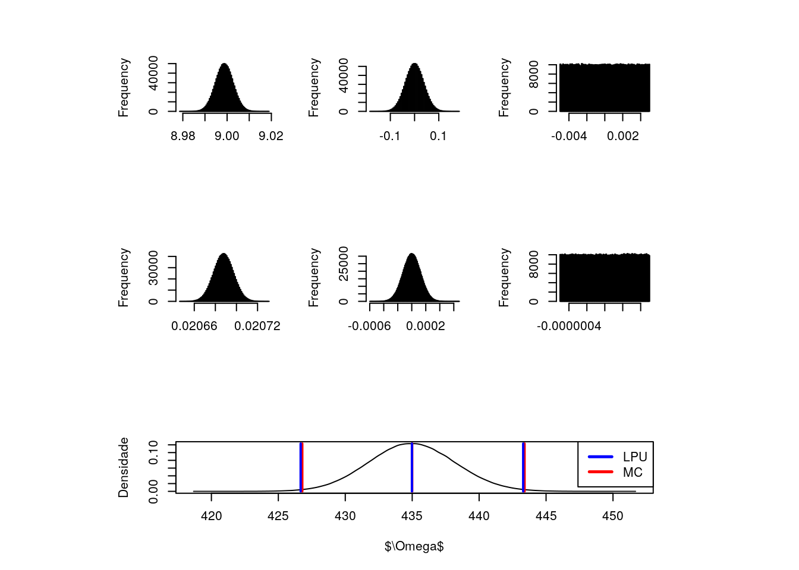
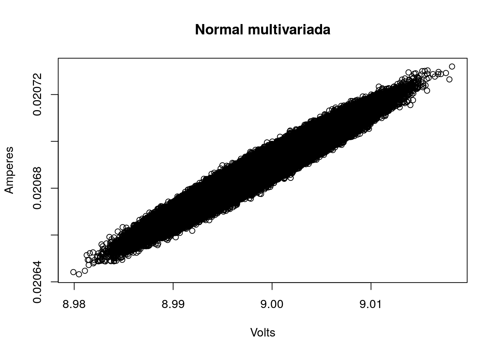
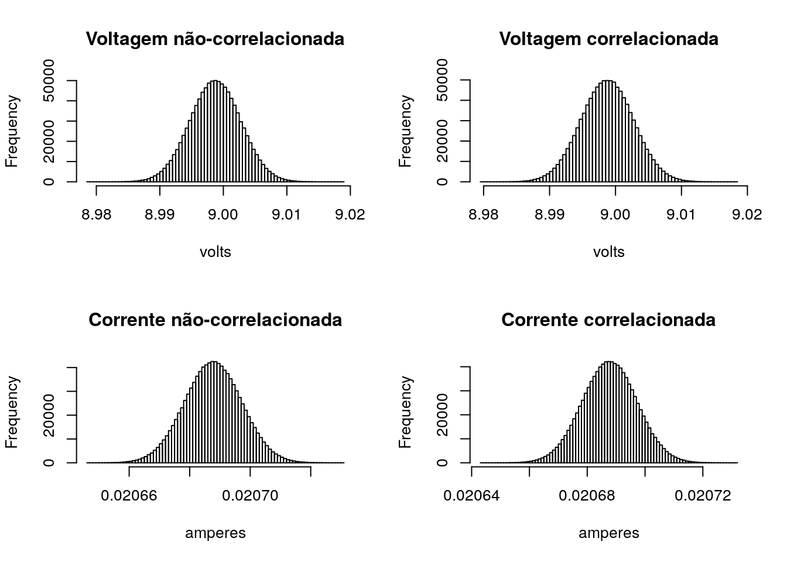
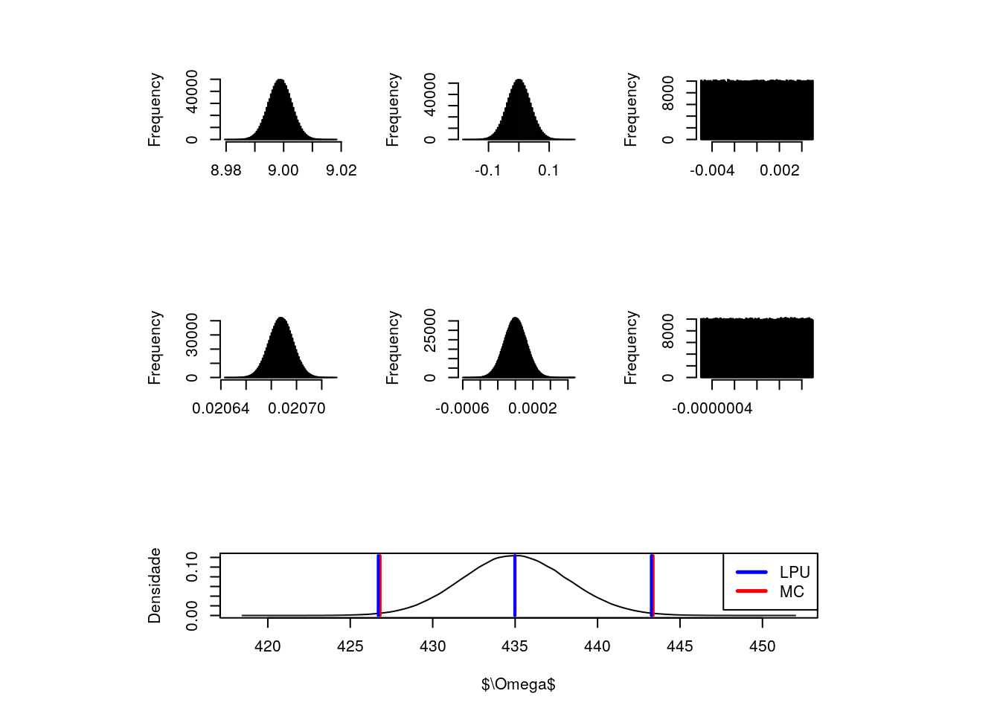

Considere o modelo matemático abaixo para medição de uma resistência com base nos valores simultaneamente observados de corrente e voltagem sob condições ambientais idênticas, utilizando um voltímetro e um amperímetro (ambos os instrumentos estavam com escala selecionada visando a menor incerteza associada ao conjunto de medições em questão, ver Tabelas 2 e 3), considerando a influência de correlação entre as variáveis e tendo ciência de que a temperatura ambiente estava oscilando entre \(22^oC\) e \(26^oC\).
Modelo Matemático:
- \(R=\frac{(Va+Vr+Vc+Vt)}{(Ia+Ir+Ic+It)}\)
| \(Va\) |
A |
Normal |
Amostrado |
| \(Vc\) |
B |
Normal |
\(\pm(0.5\%+3D)\) |
| \(Vr\) |
B |
Uniforme |
Display de 3 1/2 |
| \(Vt\) |
B |
Uniforme |
Válido entre \(-10^{\circ}C\) e \(40^{\circ}C\) |
| \(Ia\) |
A |
Normal |
Amostrado |
| \(Ic\) |
B |
Normal |
\(\pm(1.2\%+4D)\) |
| \(Ir\) |
B |
Uniforme |
Display de 5 1/2 |
| \(It\) |
B |
Uniforme |
Válido entre \(23^{\circ}C\) \(\pm\) \(5^{\circ}C\) |
val_v <- c(8.99, 9.01, 9.00, 8.99, 9.00, 9.01, 9.01, 8.98) #Volts
val_i <- c(20.658, 20.716, 20.698, 20.668, 20.692, 20.718, 20.704, 20.648)/1e3 #Amperes
#Cálculo sem considerar Correlação
r <- plot_GUM(lpu, mcs)

kable(r[2], digits=6, caption = "Law of propagation of uncertainty (LPU)")
Law of propagation of uncertainty (LPU)
| \(v_a\) |
8.998750 |
0.003981 |
1.000000 |
0.003981 |
48.337784 |
0.192432 |
7 |
| \(v_c\) |
0.000000 |
0.074994 |
2.000000 |
0.037497 |
48.337784 |
1.812516 |
Inf |
| \(v_r\) |
0.000000 |
0.005000 |
1.732051 |
0.002887 |
48.337784 |
0.139539 |
Inf |
| \(i_a\) |
0.020688 |
0.000009 |
1.000000 |
0.000009 |
-21025.951962 |
-0.197790 |
7 |
| \(i_c\) |
0.000000 |
0.000252 |
2.000000 |
0.000126 |
-21025.951962 |
-2.651930 |
Inf |
| \(i_r\) |
0.000000 |
0.000000 |
1.732051 |
0.000000 |
-21025.951962 |
-0.006070 |
Inf |
| \(u_c(y)\) |
434.979638 |
NA |
NA |
NA |
NA |
3.227012 |
261607 |
| \(U_{exp}(y)\) |
NA |
NA |
NA |
NA |
2.575848 |
8.312292 |
NA |
|
kable(r[3], caption = "Monte Carlo simulation (MCS)")
Monte Carlo simulation (MCS)
| \(\bar{MC}\) |
434.997137329814 |
| \(\bar{MC}\)-LEP |
8.20892865153678 |
| \(\bar{MC}\)-HEP |
-8.39517349906771 |
| LowEndPoint |
426.788208678277 |
| HighEndPoint |
443.392310828881 |
| \(\delta_1\) |
0.5 |
| \(\delta_2\) |
0.05 |
| \(D_{high}\) |
0.100381320157737 |
| \(D_{low}\) |
0.120862770389238 |
| \(p\)-value (Shapiro-Wilk) |
0.163045618774199 |
| 1 Algarismo Significativo |
TRUE |
| 2 Algarismos Significativos |
FALSE |
| RM |
435 \(\pm\) 8 \(\Omega\) |
|
kable(res)
| \(r(v,i)\) |
0.9715602 |
| \(U_c(y)\) |
3.2155321 |
| \(\nu_{eff}\) |
257905.0000000 |
| \(t_{student}\) |
2.5758484 |
| \(U_{exp}(y)\) |
8.2827231 |
kable(df)
| RM = 0.435 \(\pm\) 0.008 \(k\Omega\) com 99 % de confiança |
RM = 0.4350 \(\pm\) 0.0083 \(k\Omega\) com 99 % de confiança |
par(mfrow=c(1,1))
plot(m_v+xi[1,], m_i+xi[2,], main ="Normal multivariada", xlab = "Volts", ylab = "Amperes")

par(mfrow=c(2,2))
hist(mcs$mc[1,], 100, main="Voltagem não-correlacionada", xlab = "volts")
hist(m_v+xi[1,], 100, main="Voltagem correlacionada", xlab = "volts")
hist(mcs$mc[4,], 100, main="Corrente não-correlacionada", xlab = "amperes")
hist(m_i+xi[2,], 100, main="Corrente correlacionada", xlab = "amperes")

#Cálculo considerando a correlação
r <- plot_GUM(lpu, mcs, r2=rvi)

kable(r[3], caption = "Monte Carlo simulation (MCS)")
Monte Carlo simulation (MCS)
| \(\bar{MC}\) |
434.997127701204 |
| \(\bar{MC}\)-LEP |
8.18686311010373 |
| \(\bar{MC}\)-HEP |
-8.37195404236337 |
| LowEndPoint |
426.8102645911 |
| HighEndPoint |
443.369081743568 |
| \(\delta_1\) |
0.5 |
| \(\delta_2\) |
0.05 |
| \(D_{high}\) |
0.106720927710853 |
| \(D_{low}\) |
0.113349990346023 |
| \(p\)-value (Shapiro-Wilk) |
0.98395282451922 |
| 1 Algarismo Significativo |
TRUE |
| 2 Algarismos Significativos |
FALSE |
| RM |
435 \(\pm\) 8 \(\Omega\) |
|
Copyright © 2017 Guilherme Kunz, Inc. All rights reserved.